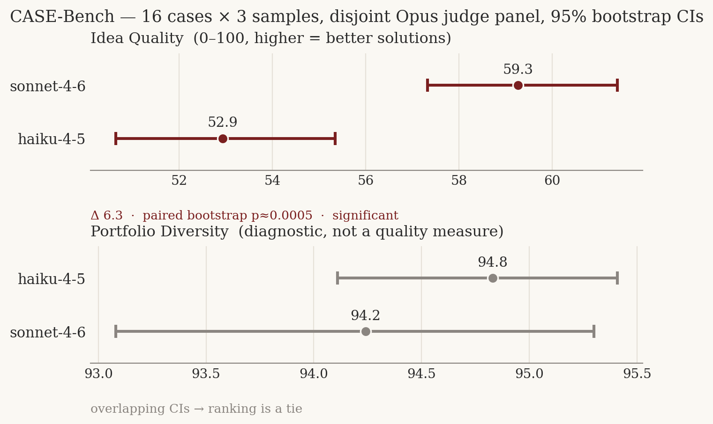

CASE-Bench
A feasibility-constrained business-ideation benchmark for LLMs.
LLMs tend to fail at idea generation in two ways: bland textbook answers, and impressive-sounding proposals that fall apart on contact with reality. CASE-Bench measures the capability that matters in practice — generating solutions to a real business problem that are feasible, high-impact, and original — and separately reports how far a model's ideas explore beyond the known playbook, without letting exploration masquerade as quality.
Each of 16 cases pairs a constrained business problem with a curated set of reference solutions (each tagged with its core mechanism). A model proposes ideas without seeing the references; a fixed panel of judges rates every idea on feasibility, impact, and originality, and a portfolio-diversity diagnostic measures how varied each model's slate is.

What makes it trustworthy
- Quality can't be gamed by novelty. The headline score is feasibility-gated impact + originality; reference-overlap is a separate diagnostic, never a quality signal — so a model that dominates on the real axes can't be out-ranked by one that merely sounds different.
- Statistics, not vibes. Multiple samples, bootstrap confidence intervals, and a paired-difference significance test; rankings whose intervals overlap are reported as ties.
- The judge is audited, not assumed. A multi-model judge panel with inter-rater agreement, a self-preference check (the canonical board uses judges disjoint from the candidates), an independent novelty cross-check, an internal-contradiction audit, and a judge-vs-human gold harness.
- Hardened. Five rounds of adversarial review fixed inversions, reward hacks, and validity gaps before release; 31 tests lock the invariants in.
Open source (MIT): github.com/Zed-Rez/casebench · ← projects